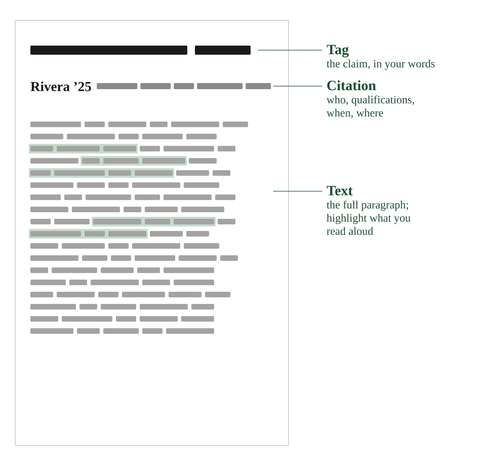

Chapter 9: Working with Evidence
In this chapter
Move: Prove. Builds on: Chapter 8. Where you use it: every time you prepare evidence for a debate, read it in a speech, or compare it with your opponent's.
Objectives
By the end of this chapter you should be able to:
- Name the three parts of a card and explain what each one does.
- Cut a card from a source: copy the text, write a tag, highlight what you will read, and cite it.
- Read evidence aloud and explain it so a judge knows what it proves.
- Explain the main rules of evidence ethics and why breaking them can lose a debate.
- Compare competing pieces of evidence and tell a judge which to prefer.
Key terms
Card, tag, citation, qualifications, card text, cutting, highlighting, explaining evidence, evidence ethics, out of context, clipping, evidence comparison, rehighlighting.
The idea
9.1 What a card is
In debate, a card is a single piece of evidence formatted according to the standards of debate. The name is old. Debaters once copied quotations onto index cards and filed them in boxes; today the cards live in documents, but the name and the format stuck. Every card has three parts, and each one has a different job.
The tag is a one-sentence summary of what the card proves, written by you, in your words. It is the claim. When you read a card in a speech, the tag is what the judge writes on the flow, so a tag should be short, specific and certain: "AI raised productivity at the firms that adopted it" tells the judge exactly what to write. A tag is also a promise. Whatever the tag claims, the text you read aloud has to support.
The citation is the record of who wrote the evidence, when, and where it was published. A full citation includes the author's name, the author's qualifications (what makes them an expert), the date, the title, the publication and a link or other way to find it. In a speech you read a short version, usually the author's last name, the year and the qualifications ("Rivera '25, labor economist at the state university"), while the full citation stays in your document so anyone who asks can find the source. In the document, emphasize only the author's name and year, the part you read aloud, so it is easy to spot.
The card text is the evidence itself, copied exactly from the source. It is the warrant: the part that actually proves the tag. A card's text should include at least the full paragraph the evidence comes from, with the original paragraph breaks kept intact, because the sentences around a claim are often what show whether you have represented it fairly. You will not read the whole paragraph aloud. Highlighting marks the parts you will read.
At a glance
| Part | What it is | What it does |
|---|---|---|
| Tag | One sentence, in your words | States the claim the card proves; it is what the judge flows |
| Citation | Author, qualifications, date, title, publication, link | Shows the source is credible and lets anyone find it |
| Card text | The source's exact words, at least a full paragraph, with read portions highlighted | Supplies the warrant that proves the tag |
9.2 Cutting a card
Cutting a card means turning a source into a card. It takes five steps, and doing them in order prevents most mistakes.

First, find and read the source, all of it, using the habits from Chapter 8. Second, copy the text: the full paragraph that contains the evidence, exactly as written, with nothing added or changed. If a key claim is spread over two paragraphs, copy both. Third, write the tag, after you have read the text, not before. A tag written first tends to claim what you wanted the source to say; a tag written after reading claims what it actually says.
Fourth, highlight. Highlighting marks the words you will read aloud in a speech. It exists because time is short: a judge does not need every word of a paragraph, only the words that prove the tag. Good highlighting follows three rules. It must prove the tag on its own: if a judge heard only the highlighted words, would they believe the tag? It must still make sense: highlighted words that skip the subject of a sentence ("will pass" without saying what will pass) leave the judge guessing. And it should be efficient: long unbroken runs of highlighted text usually include words the judge does not need. Most debaters use a highlighter color for the read words and underlining or bold for the important context around them; your class may set a standard.
Fifth, cite it, with every part of the citation. Browser tools can fill in much of a citation automatically, but check the result, especially the author's qualifications, which tools often miss and which you will read aloud.
A finished card might look like this (the source here is invented for illustration):
AI tools raised worker productivity, especially for less experienced workers.
Rivera '25, Dana Rivera, labor economist, State University, "What Happened When the Help Desk Got AI," Journal of Workplace Studies, March 2025, [link]
The card text would follow: the full paragraph from the article, with the sentences reporting the productivity gain and who gained most highlighted, and the rest left unhighlighted but still on the page.
9.3 Reading and explaining evidence
In a speech, you read a card in order: tag, short citation, highlighted text. "AI tools raised productivity, especially for less experienced workers. Rivera '25, labor economist at State University: [highlighted text]." Read the tag a little more slowly than the text, because it is what the judge writes down.
Then do the part beginning debaters skip: explaining evidence, saying in your own words what the card proves and why it matters for the debate. Evidence does not speak for itself. A judge hears a card once, at speed, and may not catch the key sentence. A short explanation after the card ("This matters because the resolution is about whether new jobs replace lost ones, and these workers kept their jobs and got better at them") turns a quotation into an argument.
The same rule applies later in the debate. When you extend a card in a rebuttal, extend its warrant, not just its name. "Extend Rivera" tells the judge nothing they can weigh. "Extend Rivera: the firms that adopted AI kept their workers and made them more productive, which answers their displacement argument" gives the judge a reason. In formats without prepared evidence, such as parliamentary debate, the same principle applies with no card at all: name your source if you can, but always make and explain the argument the evidence would contain, because there is no card for the judge or your opponent to check.
9.4 Evidence ethics
Evidence ethics are the rules that keep evidence honest. Debate depends on trust: a judge cannot check every card during a round, so the activity only works if debaters represent their sources accurately. Breaking these rules is not a strategic risk. It is cheating, and tournaments and classrooms treat it that way, often with a loss and sometimes with more.
The most common violation is reading evidence out of context: presenting a source as supporting a claim it does not support, usually by leaving out the sentences that qualify or contradict it. A card that says "AI will eliminate millions of jobs" is out of context if the next sentence says "but our model predicts it will create even more." This is why the card text includes the full paragraph and why Chapter 8 insists you read the whole source. If the rest of the article undermines your card, do not use the card.
Highlighting can create the same problem. Highlighting that skips words so the read version says something the full sentence does not (reading "AI will destroy jobs" out of "AI will not destroy jobs") misrepresents the source as surely as a fabricated quote. The test: would the author agree that your highlighted words fairly state what they wrote?
Clipping is claiming to read more of a card than you actually read, for example by marking text as highlighted and then skipping parts of it in the speech. Your opponent and judge rely on your document to know what evidence was read, so clipping misrepresents the debate itself. If you decide mid-speech to read less of a card, say so: "I'll stop the card there."
The most serious violations are fabrication (inventing evidence or citations) and distortion (changing a source's words). Chapter 8's warning about AI hallucinations belongs here too: a fabricated citation is fabricated whether you or a chatbot invented it, and you are responsible for it.
A practical test covers all of these. Ask whether your evidence would survive your opponent reading the whole source. If they could rehighlight your card, reading different words from the same paragraph to make it say the opposite, the card is not just weak. It is a weapon for the other side.
9.5 Comparing evidence
Debates often come down to two cards that disagree. A judge cannot simply count cards; under any criterion, the judge has to decide which evidence is more convincing. Evidence comparison means giving the judge reasons to prefer your evidence, out loud, in your speech. Chapter 8 introduced the questions; here is how to use them as arguments.
Qualifications. Is one author an expert on this specific question and the other not? A labor economist outranks a technology journalist on employment data.
Recency. On fast-moving topics, newer evidence can account for events older evidence could not. Recency matters most when something has changed between the two dates; a newer card is not better just because it is newer.
Specificity. Evidence that speaks directly to the resolution, the place or the situation in the debate beats evidence about something nearby. A study of AI at community colleges beats a general claim about technology in schools if the debate is about community colleges.
Method. For studies: how big was the sample, how was it chosen, and what was actually measured? A survey of a thousand employers beats one company's experience.
Certainty. Evidence that takes a clear position beats evidence that hedges. A card that says something "could potentially" happen proves much less than one that says it "will."
Before comparing, check whether the cards actually conflict. Two cards that seem to disagree often measure different things: one counts jobs lost in a single industry, the other counts jobs gained across the economy. Pointing out that your opponent's card does not answer yours can be stronger than arguing yours is better.
At a glance
| Comparison | The question | Say it |
|---|---|---|
| Qualifications | Who is the expert on this question? | "Our author studies labor markets; theirs writes about gadgets." |
| Recency | Has something changed since the older card? | "Their card predates the policy change; ours accounts for it." |
| Specificity | Which speaks directly to this debate? | "Ours is about community colleges; theirs is about schools in general." |
| Method | Which study is better designed? | "A thousand employers beats one company's experience." |
| Certainty | Which takes a clear position? | "Their author says it could happen; ours says it will." |
Say it
- Read a card: "[Tag]. Rivera '25, labor economist at State University: [highlighted text]."
- Explain it: "This matters because..."
- Extend a warrant: "Extend Rivera: the firms that adopted AI kept their workers. That answers their displacement argument."
- Compare: "Prefer our evidence for two reasons: it's more recent, and it measures outcomes instead of predictions."
- Challenge context: "Read the next sentence of their card. The author says the opposite."
- Stop a card honestly: "I'll stop the card there."
Worked examples
A personal decision
Resolution: Starting at a community college costs less than starting at a four-year university.
The affirmative cuts a card from the College Board's annual pricing report. Tag: "Community college tuition is roughly a third of public four-year tuition." The citation names the College Board, the report title and the year. The text includes the full paragraph comparing published prices, with the two figures and the sentence identifying them as average published tuition and fees highlighted. The affirmative leaves unhighlighted, but on the page, the paragraph's note that published prices differ from what students pay after grants.
That unhighlighted sentence is exactly what the negative points to: the card measures sticker price, not net price. The affirmative cannot be accused of hiding anything, because the sentence was on the page, and it has its answer ready, because it read the whole source. Honest cutting protects you as well as your opponent.
A global prediction
Resolution: Artificial intelligence will cause more job creation than job displacement.
Both sides read cards about the same 2025 employer survey. The affirmative's card is tagged "Employers expect AI to create more jobs than it displaces." The negative's card, from a technology news site, is tagged "Experts warn AI will displace millions of workers." In the rebuttals, the affirmative compares: its card comes directly from the survey report while the negative's is a summary of it; and the negative's card, read in full, reports the same survey's displacement figure without its creation figure. That last point is a context argument, and a strong one, because it uses the negative's own evidence to show the comparison favors the affirmative.
How a judge weighs it
Judges weigh evidence by the reasons the debaters give them. Without comparison, many judges treat conflicting cards as a wash, and the debate turns on something else. With comparison, the better card wins that part of the debate. Judges also notice ethics: a debater caught reading evidence out of context loses credibility on every other card, and in many settings a clear violation is grounds to lose the round.
Common mistakes
- Writing the tag first. Read the text, then write a tag that claims what the text actually proves.
- Tags that overclaim. If the highlighted text says "could," the tag cannot say "will."
- Cutting only one sentence. Keep at least the full paragraph, with its breaks, so the context is on the page.
- Highlighting that does not make sense. If the highlighted words leave out what the sentence is about, the judge cannot follow it.
- Reading without explaining. A card read with no explanation is a quotation, not an argument.
- Extending names instead of warrants. "Extend Rivera" gives the judge nothing to weigh.
Practice
Drill: cut and swap (20 minutes, pairs). Each partner cuts one card on the AI fact resolution from a source found in Chapter 8's research log: full paragraph, tag, highlighting and full citation. Swap cards. Your partner reads only the highlighted words aloud and says whether they prove the tag, then tries to rehighlight the paragraph to support the opposite claim. Fix anything that fails.
Writing exercise. Find two cards on the same question that disagree. In 250 words, compare them on at least three of the five comparison questions, and end with a one-sentence instruction to a judge about which to prefer and why.
Check questions
Choose an answer to see feedback. Nothing is recorded.
1. Which part of a card is written in your own words?
2. Why should a card's text include at least the full paragraph, even though you won't read all of it?
3. A card's highlighted words read "AI will destroy jobs," but the full sentence says "AI will not destroy jobs." What is the problem?
4. In a rebuttal, which extension gives the judge the most to weigh?
5. Your card comes from a labor economist; your opponent's comes from a technology blogger. Which comparison are you making if you point that out?